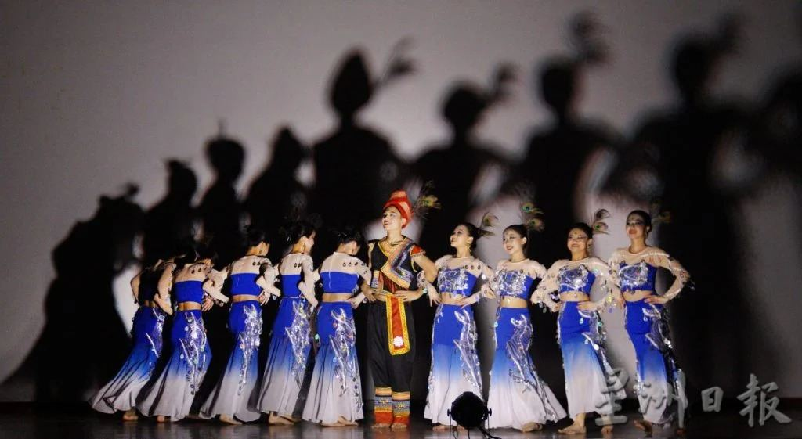
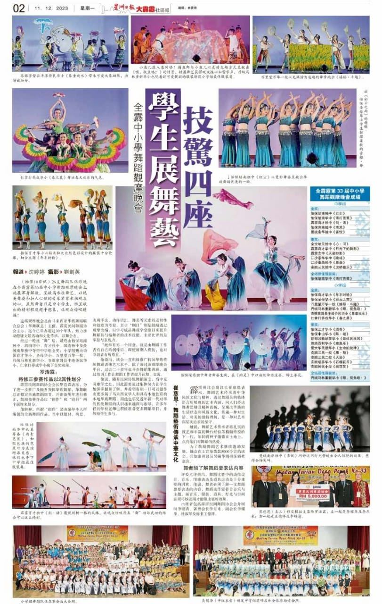
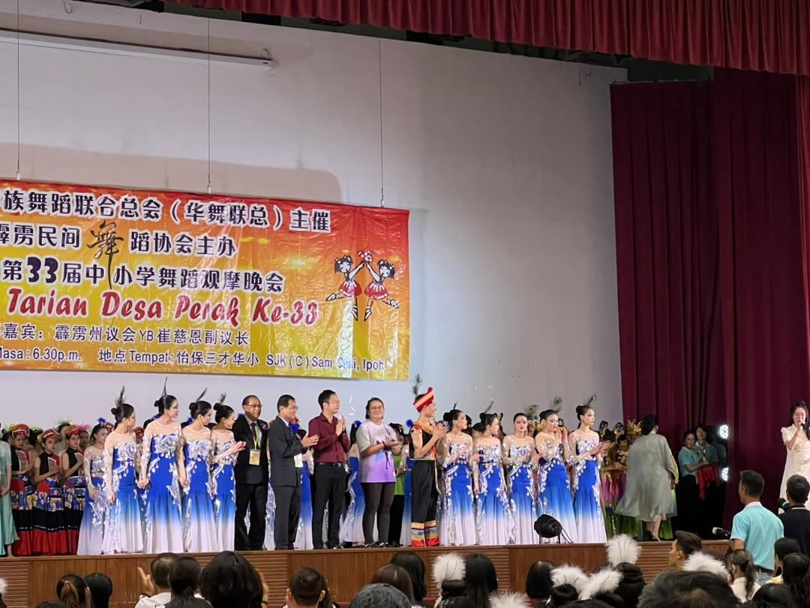
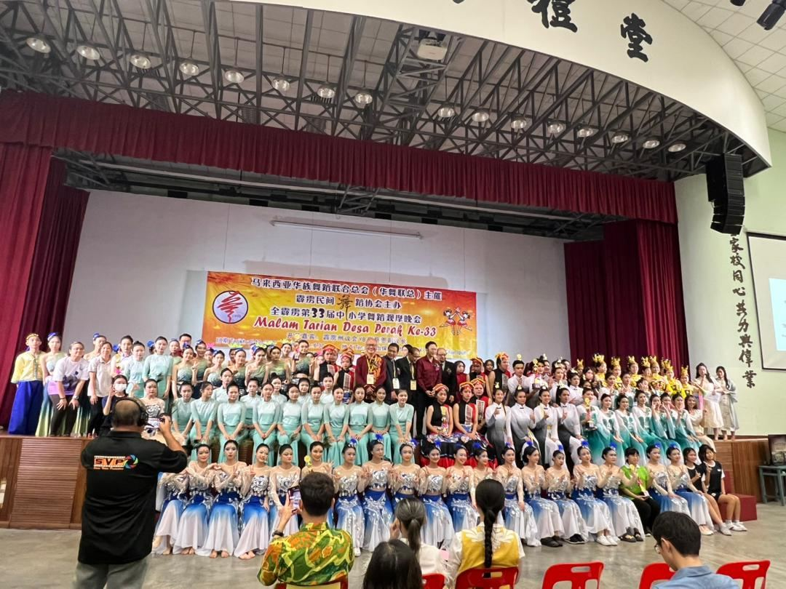
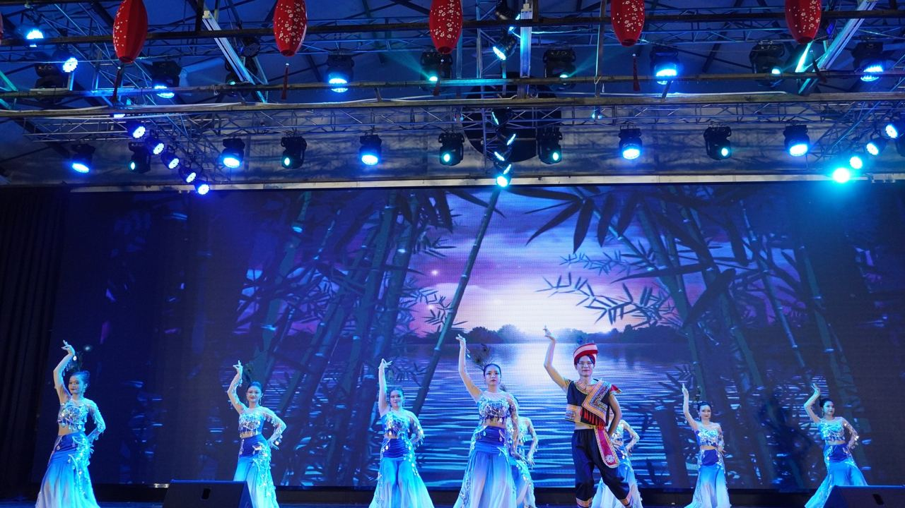
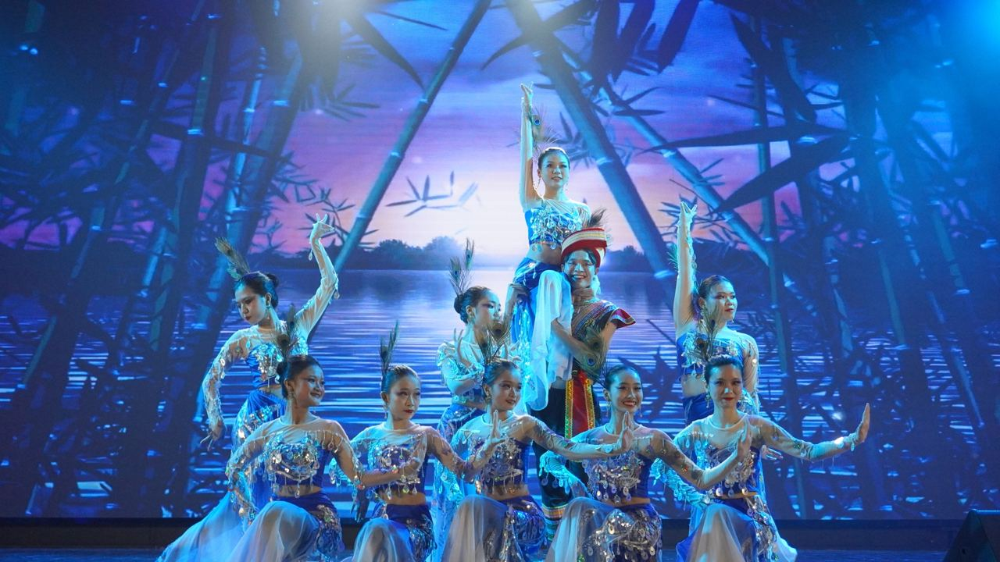
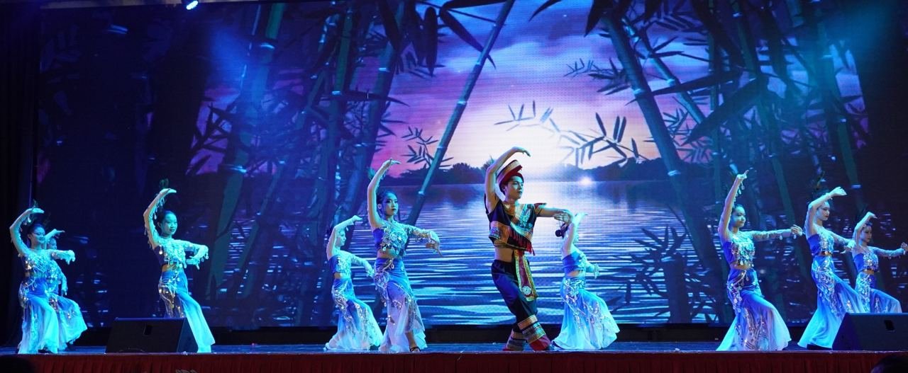

南华独中舞蹈团高奏凯歌
南华独中舞蹈团高奏凯歌
斩获全霹雳第33届中小学舞蹈观摩晚会中学组金奖
本校舞蹈团表现出色，凭借其精湛的舞技和感人的表演，成功斩获由马来西亚华族舞蹈联合总会（华舞联总）主催，霹雳民间舞蹈协会主办的全霹雳第33届中小学舞蹈观摩晚会中学组金奖。
本校舞蹈团的获奖作品名为《雀悦》，由黄韦汉教练悉心指导。舞蹈以傣家村寨的少年与姑娘们在翠绿的竹海中翩翩起舞为主题，精湛的编排勾勒出竹影婆娑、小桥流水的乡野诗意。这片风靡的如孔雀羽翼展开，犹如翩翩起舞的孔雀，舞动的羽翼仿佛拂过空气，散发出一阵阵芳香，优雅而庄重的舞姿，仿佛孔雀展翅般令人陶醉，与灯影巧妙结合，将观众们引领进一个充满梦幻与诗意的乡野仙境。
校长陈丽冰博士深受舞蹈团精湛的舞姿所感动，并在颁奖典礼上表示这是学生们自己努力后所摘下的甜美果实。她常常以“心有多大，舞台就有多大”来勉励南华独中的学生们，舞蹈团的成功绝对是孩子们自身努力的回报。陈校长还表扬舞蹈团学生们积极上传练习视频给舞蹈教练远程指导，展现了孩子们对舞蹈的热爱和用实力与诚意证明自己决心的决心。特别感谢《雀悦》这支舞蹈创作者黄韦汉教练的辛勤指导。
#舞蹈团 #中小学舞蹈观摩晚会 #金奖 #雀悦
#南华独中 #曼绒 #实兆远






